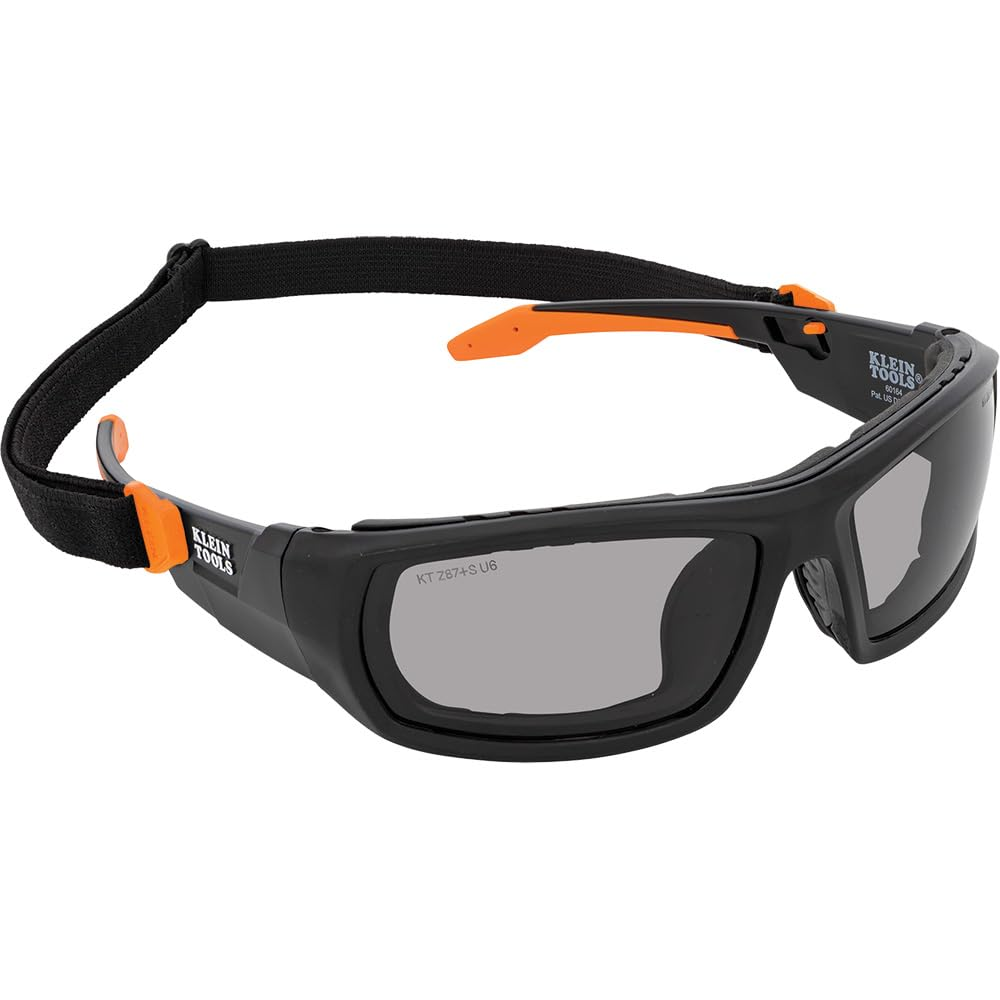
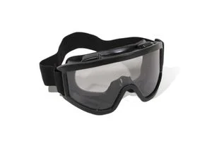

Protege tu vista con lentes de policarbonato resistente, diseñados para ser antiimpacto, antirayaduras, con protección UV y tratamiento antiniebla. Su diseño ergonómico y liviano ofrece comodidad y ajuste perfecto, ideal para largas jornadas en la industria, construcción o bricolaje. Certificados según normas internacionales (ANSI Z87.1), combinan máxima seguridad y durabilidad a un precio accesible desde 300$. ¡Invierte en calidad y protección!
300$

Fabricados en policarbonato de alta resistencia con protección UV, estos lentes ofrecen máxima seguridad contra impactos, polvo y salpicaduras químicas. Su diseño ergonómico incluye patillas ajustables, puente nasal cómodo, lentes antirrayas y antiempañantes, ideales para largas jornadas. Certificados según ANSI Z87.1 y CE EN166, garantizan calidad y compatibilidad con otros equipos de protección, todo a un precio desde 600$. ¡Seguridad y confort en un solo producto!
600$

Estos lentes de seguridad de alta calidad están diseñados para brindar máxima protección y comodidad. Hechos de policarbonato resistente a impactos y rayones, ofrecen una excelente resistencia y durabilidad. Cuentan con protección UV y un recubrimiento antivaho para asegurar visibilidad en cualquier entorno. Con un diseño ligero y ergonómico, se ajustan perfectamente durante largas jornadas a un precio de 800$